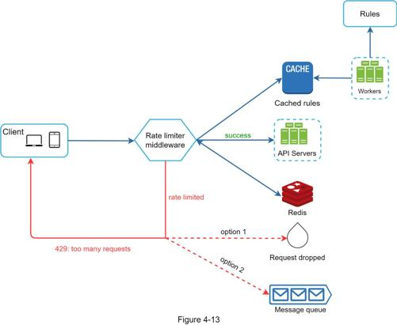

The high-level design in Figure 4-12 does not answer the following questions:
•How are rate limiting rules created? Where are the rules stored?
•How to handle requests that are rate limited?
In this section, we will first answer the questions regarding rate limiting rules and then go over the strategies to handle rate-limited requests. Finally, we will discuss rate limiting in distributed environment, a detailed design, performance optimization and monitoring.
Lyft open-sourced their rate-limiting component [12]. We will peek inside of the component and look at some examples of rate limiting rules:
domain: messaging
descriptors:
- key: message_type
Value: marketing
rate_limit:
unit: day
requests_per_unit: 5
In the above example, the system is configured to allow a maximum of 5 marketing messages per day. Here is another example:
domain: auth
descriptors:
- key: auth_type
Value: login
rate_limit:
unit: minute
requests_per_unit: 5
This rule shows that clients are not allowed to login more than 5 times in 1 minute. Rules are generally written in configuration files and saved on disk.
In case a request is rate limited, APIs return a HTTP response code 429 (too many requests) to the client. Depending on the use cases, we may enqueue the rate-limited requests to be processed later. For example, if some orders are rate limited due to system overload, we may keep those orders to be processed later.
How does a client know whether it is being throttled? And how does a client know the number of allowed remaining requests before being throttled? The answer lies in HTTP response headers. The rate limiter returns the following HTTP headers to clients:
X-Ratelimit-Remaining: The remaining number of allowed requests within the window.
X-Ratelimit-Limit: It indicates how many calls the client can make per time window.
X-Ratelimit-Retry-After: The number of seconds to wait until you can make a request again without being throttled.
When a user has sent too many requests, a 429 too many requests error and X-Ratelimit-Retry-After header are returned to the client.
Figure 4-13 presents a detailed design of the system.

•Rules are stored on the disk. Workers frequently pull rules from the disk and store them in the cache.
•When a client sends a request to the server, the request is sent to the rate limiter middleware first.
•Rate limiter middleware loads rules from the cache. It fetches counters and last request timestamp from Redis cache. Based on the response, the rate limiter decides:
•if the request is not rate limited, it is forwarded to API servers.
•if the request is rate limited, the rate limiter returns 429 too many requests error to the client. In the meantime, the request is either dropped or forwarded to the queue.